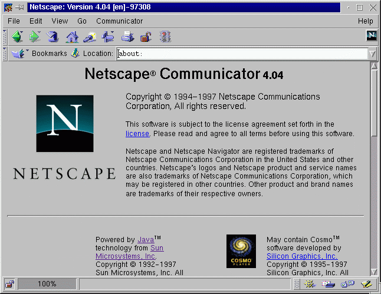

ทดสอบการใช้งาน Netscape Communicator 4.04
พึ่งจะดาวน์โหลดคอมมิวนิเคเตอร์เวอร์ชั่น 4.03 มาได้ไม่ทันไร บริษัทเน็ตสเคปคอมมิวนิเคชั่น ก็ได้อนุญาตให้ดาวน์โหลดคอมมิวนิเคเตอร์เวอร์ชั่น 4.04 ในเวลาถัดมาไม่นานนัก คาดว่าเวอร์ชั่นนี้จะเป็นเวอร์ชั่นที่อัพเกรดจากเวอร์ชั่น 4.03 เพื่อทำให้มีความเสถียรยิ่งขึ้นกว่าเดิม และคงจะเป็นเวอร์ชั่นที่ค่อนข้างจะคงที่ไปอีกระยะก่อนจะมีการแก้ไขครั้งใหญ่ โดยเฉพาะเกี่ยวกับเรื่องของจาวาคอมแพตติเบิล

สำหรับเน็ตสเคปเวอร์ชั่นนี้เมื่อเราคลิกที่เมนู 'About Communicator' จะเห็นว่าส่วนที่เป็น 'Powered by Java' ที่เคยมีโลโกรูปถ้วยกาแฟที่แสดงว่าเป็นผลิตภัณฑ์ที่มีความเข้ากันได้กับจาวา ถูกลบออกไปชั่วคราว ทั้งนี้เกิดจากปัญหาที่ทางเน็ตสเคปไม่สามารถพัฒนาเกี่ยวกับเรื่องของจาวาให้มีความเข้ากันได้กับเวอร์ชั่นใหม่ได้ 100% ดังนั้นจึงต้องมีการลบโลโกนี้ออกไปเพื่อหลีกเลี่ยงการละเมิดทางสัญญา
เท่าที่ตรวจสอบดูก็พบว่าปัญหานี้มีอยู่จริง โดยเฉพาะเมื่อทดลองใช้กับตัวอย่างแอพเพล็ตที่มากับ JDK 1.1.3 พบว่ามีแอพเพล็ตบางอย่างไม่สามารถใช้งานได้เช่นแอพเพล็ตที่เกี่ยวกับเรื่องของ Internationalization เป็นต้น
อย่างไรก็ดี เน็ตสเคปคอมมิวนิเคเตอร์เวอร์ชั่น 4.04 สำหรับลีนุกซ์ ก็มีของขวัญที่น่ายินดีสำหรับชาวลีนุกซ์ทั้งหลาย นั่นก็คือทางบริษัทเน็ตสเคปฯ ก็ได้ทำการพัฒนาโปรแกรม calendar ซึ่งเป็นโปรแกรมที่ใช้งานสำหรับเป็นสมุด